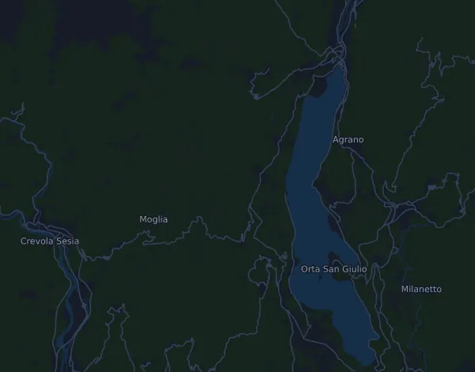

Minerva Energia Ultra Trail Lago d'Orta – UTLO 58 km
- Distans
- 56,8 km
- Höjdmeter
- ↑ 446 130 m
- Högsta punkt
- 1 589 m ö.h.
- Underlag
- Terräng och stig
- Karaktär
- Bergig
- Vätskekontroller
- 4
Höjdprofil
Förbered dig med Mila
Mila är en löpcoach i appen. Lägger du till ett lopp i din plan planerar coachen veckorna fram till start efter din form, och ger dig en tidsprognos och en plan för tempo, vätska och energi på banan.

Rätt pass. Rätt dag.
Banan

Om banan
Höjddatan för den här banan ser trasig ut i underlaget: 446 130 höjdmeter på 57 km och klättringar på flera hundra meter över bara några tiotal meter går inte ihop, och nollvärdena vid 10 och 30 procent är troligen mätfel. Det som går att läsa är en start kring 294 m ö.h. och en lång klättring upp mot ungefär 1260 m kring 40 procent av banan, cirka km 23. Därefter går det ned mot 200–400 m, upp igen till runt 645 m kring km 40–45 och sedan nedför mot mål på cirka 231 m. Högsta punkt anges till 1589 m, troligen i första halvan. Den totala stigningen går inte att läsa säkert, men den ligger troligen på flera tusen meter.
Banan kräver uthållighet i långa klättringar där du går när pulsen sticker, lår som tål långa nedförslöp och ork för en sista stigning när du redan är trött. Bygg långpassen stegvis i kuperad terräng, öva rask uppförsgång och nedförslöpning gradvis, och lägg in styrka för lår och vader. Träna också på att äta och dricka under långa pass. Kontrollera banprofilen hos arrangören för exakta siffror.
Beskrivningen är skriven av Milas coach utifrån banans data.
Klättringar
| Börjar vid | Längd | Höjdmeter | Lutning | Topp (m ö.h.) |
|---|---|---|---|---|
| km 0,0 | 10 m | 148 m | 1 255,4 % | 148 |
| km 0,0 | 40 m | 300 m | 685,5 % | 300 |
| km 0,1 | 10 m | 304 m | 2 749,3 % | 304 |
| km 0,1 | 10 m | 306 m | 2 747,6 % | 306 |
| km 0,1 | 20 m | 156 m | 719,3 % | 156 |
| km 0,2 | 10 m | 315 m | 3 077,4 % | 315 |
| km 0,2 | 30 m | 162 m | 483,7 % | 162 |
| km 0,3 | 30 m | 164 m | 524,6 % | 164 |
| km 0,3 | 10 m | 111 m | 2 025,5 % | 111 |
| km 0,3 | 30 m | 113 m | 419,6 % | 113 |
| km 0,4 | 20 m | 349 m | 1 631,3 % | 349 |
| km 0,4 | 20 m | 358 m | 2 252,8 % | 358 |
| km 0,5 | 50 m | 365 m | 803,9 % | 365 |
| km 0,5 | 40 m | 368 m | 903,9 % | 368 |
| km 0,6 | 20 m | 369 m | 1 546,2 % | 369 |
| km 0,6 | 10 m | 185 m | 1 744,8 % | 185 |
| km 0,7 | 10 m | 62 m | 743,1 % | 185 |
| km 0,7 | 50 m | 371 m | 707,3 % | 371 |
| km 0,8 | 10 m | 372 m | 3 664,2 % | 372 |
| km 0,8 | 10 m | 374 m | 3 402,0 % | 374 |
| km 0,9 | 20 m | 375 m | 1 630,7 % | 375 |
| km 0,9 | 20 m | 375 m | 1 742,2 % | 375 |
| km 0,9 | 10 m | 376 m | 3 435,1 % | 376 |
| km 1,0 | 20 m | 189 m | 976,7 % | 189 |
| km 1,0 | 10 m | 189 m | 1 428,1 % | 189 |
| km 1,0 | 90 m | 251 m | 283,2 % | 377 |
| km 1,1 | 20 m | 377 m | 2 346,9 % | 377 |
| km 1,2 | 50 m | 378 m | 737,3 % | 378 |
| km 1,3 | 10 m | 378 m | 3 130,8 % | 378 |
| km 1,3 | 40 m | 379 m | 950,4 % | 379 |
Inför start
Vätskekontroller
| Vid | Här finns |
|---|---|
| km 9,0 | vatten, mat |
| km 17,5 | vatten, mat |
| km 34,0 | vatten, mat |
| km 48,0 | vatten, mat |
Källa: ultratraillo.com, hämtat 15 oktober 2026
Tempotabell
Minerva Energia Ultra Trail Lago d'Orta – UTLO 58 km på 4:45:00 – tid per km och mellantider
5:01 per km · km 10: 50:08 · km 20: 1:40:17 · km 30: 2:30:25 · km 40: 3:20:34 · mål: 4:45:00
Minerva Energia Ultra Trail Lago d'Orta – UTLO 58 km på 5:45:00 – tid per km och mellantider
6:04 per km · km 10: 1:00:42 · km 20: 2:01:24 · km 30: 3:02:05 · km 40: 4:02:47 · mål: 5:45:00
Minerva Energia Ultra Trail Lago d'Orta – UTLO 58 km på 6:45:00 – tid per km och mellantider
7:08 per km · km 10: 1:11:15 · km 20: 2:22:30 · km 30: 3:33:45 · km 40: 4:45:01 · mål: 6:45:00
Minerva Energia Ultra Trail Lago d'Orta – UTLO 58 km på 7:30:00 – tid per km och mellantider
7:55 per km · km 10: 1:19:10 · km 20: 2:38:20 · km 30: 3:57:31 · km 40: 5:16:41 · mål: 7:30:00
Tiderna förutsätter jämnt tempo hela vägen. Det är ren räkning, ingen prognos: i backar, i trängsel och vid vätskekontroller varierar tempot.
Vanliga frågor
När går Minerva Energia Ultra Trail Lago d'Orta – UTLO 58 km?
Loppet gick lördag 17 oktober 2026. Datum för nästa upplaga är inte klart än.
Hur lång är Minerva Energia Ultra Trail Lago d'Orta – UTLO 58 km och hur många höjdmeter är det?
Loppet är 56,8 km långt med 446 130 höjdmeter uppför och 446 193 nedför. Högsta punkten ligger 1 589 m ö.h.
Hur ser banan på Minerva Energia Ultra Trail Lago d'Orta – UTLO 58 km ut?
Banan räknas som bergig, med 7 849 höjdmeter per km i snitt. Den har 60 klättringar på minst 25 höjdmeter; den största börjar vid km 2,3: 497 höjdmeter på 20 m. Start och mål ligger på samma plats. Underlaget är terräng och stig.
Finns det vätskekontroller på Minerva Energia Ultra Trail Lago d'Orta – UTLO 58 km?
Ja. Arrangören har 4 vätskekontroller: km 9,0 (vatten, mat); km 17,5 (vatten, mat); km 34,0 (vatten, mat); km 48,0 (vatten, mat).
Hur lägger jag upp farten på Minerva Energia Ultra Trail Lago d'Orta – UTLO 58 km?
Sikta på en jämn ansträngning snarare än ett jämnt tempo: låt farten gå ner i uppförsbackarna, hämta tillbaka den när det planar ut, och håll igen de första kilometrarna. De största klättringarna börjar vid km 1,3, km 1,8, km 1,9 och km 2,3. I Mila får du en tempoplan för just den här banan efter din egen form.
Fler lopp som det här
Fler lopp i närheten
- Maratona di Ravenna Città d'Arte – 42K8 november 2026 · Ravenna, Italien
- Eurospin Verona Run Marathon 42K15 november 2026 · Verona, Italien
- Cinque Mulini (94ª edizione) – senior, ca 10 km22 november 2026 · San Vittore Olona, Italien
- Estra Firenze Marathon 42,2 km29 november 2026 · Firenze, Italien
- FIAT Torino City Marathon 42,2 km29 november 2026 · Torino, Italien
- Campaccio Cross Country 10 km6 januari 2027 · San Giorgio su Legnano, Italien
Förbered dig med Mila
Rätt pass. Rätt dag.
Uppgifterna kommer ur banfilen och arrangörens information. Kontrollera datum, starttider och regler hos arrangören.
Mila är inte kopplad till, sponsrad av eller godkänd av arrangören eller loppets sponsorer. Namn och varumärken tillhör sina ägare. Arrangör eller rättighetsinnehavare? Begär ändring eller borttagning